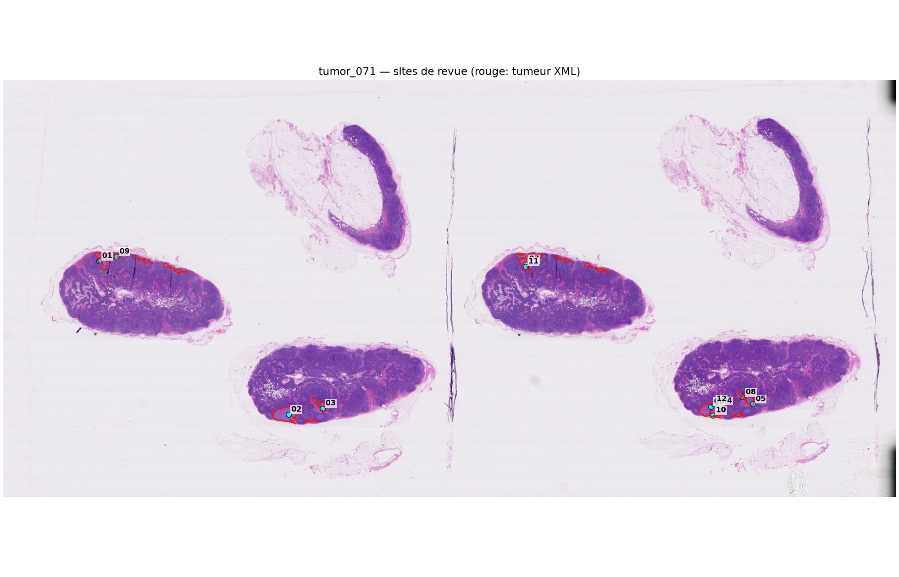
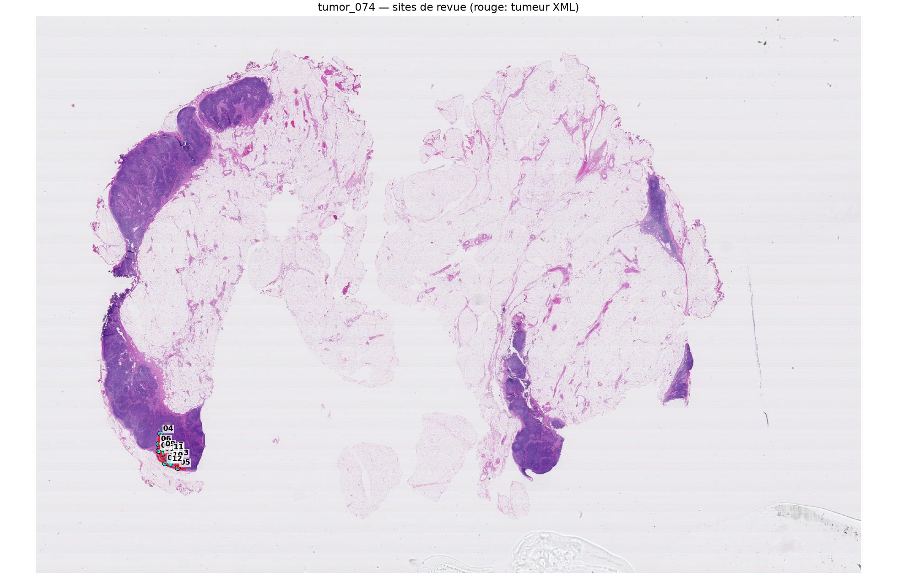
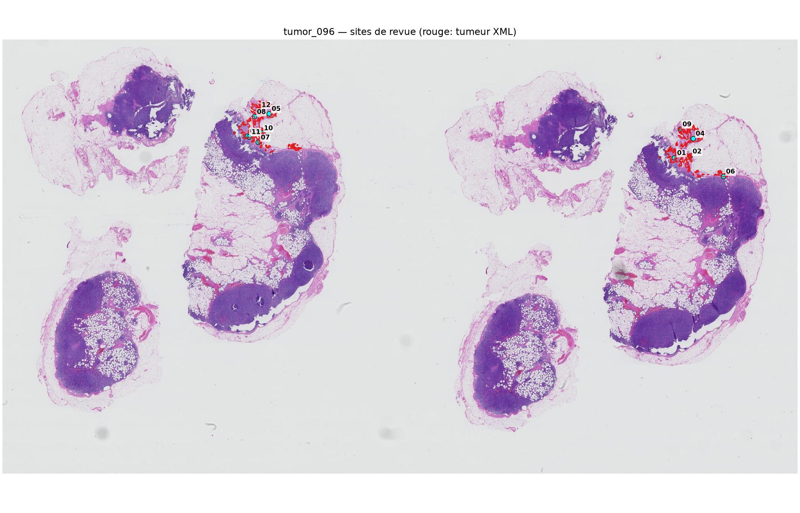

Données de validation. Cette lecture sert à comprendre la perte de sensibilité d’Iter8. Aucun patch de ce pack ne doit être ajouté à l’entraînement.
Statut : lecture junior indépendante et préliminaire. Ne pas consulter une lecture senior avant d’avoir exporté et figé ce CSV. Les métadonnées techniques sont conservées pour assurer la traçabilité de la sélection.
Pour qu’un site soit compté comme complet, renseigner le diagnostic du patch central, le motif dominant, la qualité de l’image et le niveau de confiance. Le mécanisme d’échec et le commentaire peuvent rester vides si aucune conclusion supplémentaire n’est possible. La saisie est enregistrée automatiquement dans ce navigateur.
Vues d’ensemble
Vue d’ensemble tumor_071

Vue d’ensemble tumor_074

Vue d’ensemble tumor_096
